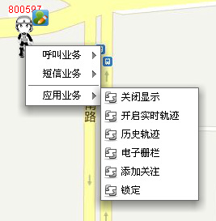
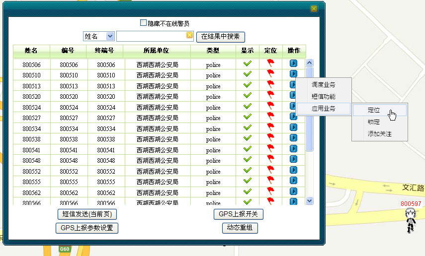
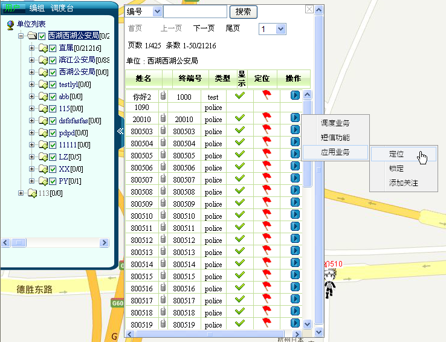
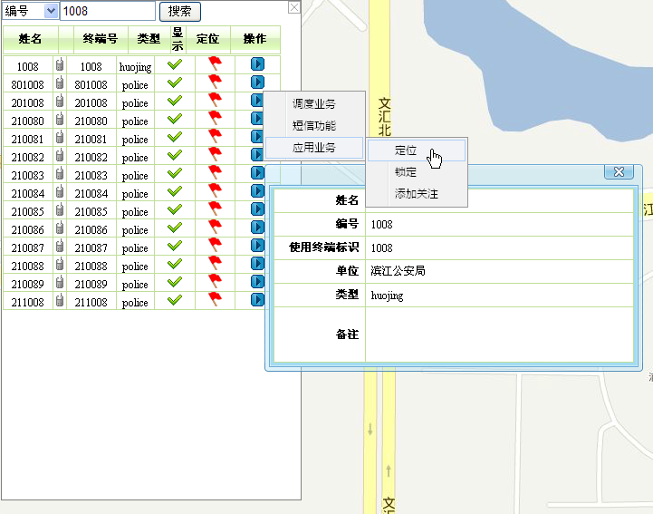

只有调度用户具有应用的权限。在进行应用业务操作之前，首先要确认调度用户成功登陆GIS系统。
在GIS系统中，用户可通过以下几种方法进行GIS的应用业务操作。
方式一：
调度员可以通过在地图上选中移动用户，右键选择应用业务，如下图1所示。

图1. 地图右键选择应用业务
方式二：
调度员可通过单击菜单栏上的［调度功能/呼叫面板］，在呼叫面板上选择相应的应用业务，如下图2所示。

图2. 呼叫面板选择应用业务
方式三：
调度员还可通过框选用户，对“选中用户列表”中的用户点击右键选择应用业务。

图3. 框选移动用户右键选择应用业务
方式四：
调度员还可在成员树中，对“用户”组下的用户点击右键选择应用业务。

图4. 成员树移动用户右键选择应用业务
方式五：
调度员还可地图上点击右键，查找移动用户，在出现的列表上点击右键选择应用业务。

图3. 框选移动用户右键选择应用业务
eTRA GIS的应用业务主要包括：
Copyright © 2012 Eastcom, Inc. All rights reserved. |
||